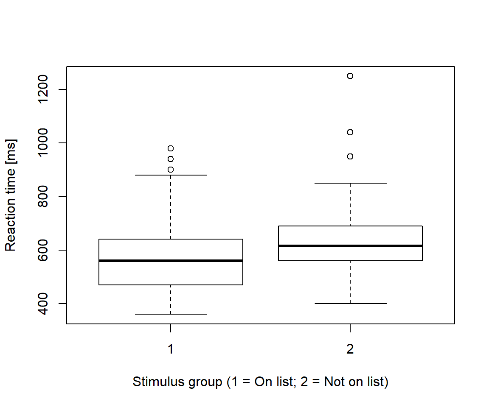
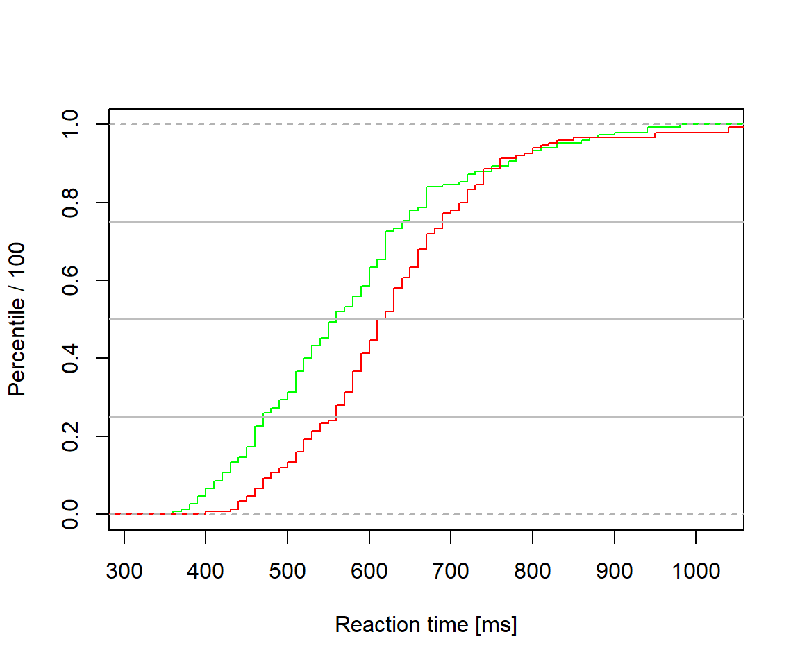

Notes REX102
Today a bit about missing data and how to deal with them. Then a few examples of the powerful plotting tools available for data screening in R. And then we will continue our work on Script 2: An analysis of data from a listening experiment.
Missing data
As you know, missing data in R is coded NA. However, many data sets contain other error codes, like 999. Some data sets include several error codes, for example 99 for a missing questionnaire response and 999 for an incorrect response (e.g., if two boxes were ticked when only one was allowed). Make sure you don’t analyse these error codes as real data. And make sure no one do the same with your data: document clearly how you coded missing data in the file (code book) explaining your data set.
Here I create some fake data, with values = 999 representing missing data. Mean values of each variable should be around 0, but are much higher for some thanks to error codes handled as real data. This is easily spotted using the function summary. Note the use of sapply to calculate things for each column of the data frame.
set.seed(123)
x <- rnorm(1000)
miss <- sample(1000, 7)
x[miss] <- 999
d <- data.frame(matrix(x, nrow = 100, ncol = 10))
summary(d[1:3]) # Just first three columns to illustrate ## X1 X2 X3
## Min. :-2.30917 Min. : -2.0532 Min. :-1.75653
## 1st Qu.:-0.49385 1st Qu.: -0.7522 1st Qu.:-0.53131
## Median : 0.06176 Median : -0.1583 Median : 0.03591
## Mean : 0.09041 Mean : 29.8612 Mean : 0.12047
## 3rd Qu.: 0.69182 3rd Qu.: 0.5303 3rd Qu.: 0.76363
## Max. : 2.18733 Max. :999.0000 Max. : 2.29308sum(d == 999) # Total number of missing values coded 999## [1] 7sapply(d, max) # Maximum value of each variable. ## X1 X2 X3 X4 X5 X6
## 2.187333 999.000000 2.293079 2.571458 999.000000 999.000000
## X7 X8 X9 X10
## 999.000000 2.691714 2.684859 2.575450sapply(d, function(x) sum(x == 999)) # How many 999's per variable? ## X1 X2 X3 X4 X5 X6 X7 X8 X9 X10
## 0 3 0 0 2 1 1 0 0 0Recoding missing
How to recode the 999’s to NA? Below is an expert’s trick that I learnt from reading Hadley Wickhams book Advanced R.
Before reading that book, I might have tried something like: d$X1[d$X1 == 999] <- NA, and then copy-paste and modifying this line for each of the ten variables in d. Would work for this small data set, but what if I had 139 variables: A lot of time and an accumulated risk for introducing errors.
This is much more efficient and safer:
recode_missing <- function(x) {
# Takes a vector as input, and recodes any instance of 999 to NA;
# outputs the recoded vector
x[x == 999] <- NA
x
}
# Use lapply() to recode. d[] keepd d as a data frame (lapply() wants to return a list)
d[] <- lapply(d, recode_missing)
sapply(d, function(x) sum(x == 999, na.rm = TRUE)) # How many 999's per variable? ## X1 X2 X3 X4 X5 X6 X7 X8 X9 X10
## 0 0 0 0 0 0 0 0 0 0sapply(d, function(x) sum(is.na(x))) # How many NA's per variable?## X1 X2 X3 X4 X5 X6 X7 X8 X9 X10
## 0 3 0 0 2 1 1 0 0 0If your data frame contains vectors of different types, for example some numeric and some characters (with missing coded ‘999’ rather than 999), you may need to do the recoding separately for each type of vector (or make the function recode_missing more advanced to handle different types of input). If you have imported data with characters, R may have turned character vectors into factors without asking and you may need to replace factor levels of 999 with NA’s.
Some basic plots for exploring data
I will use data from Howell’s table 2.1 on reaction time (RT) to illustrate how R’s powerful plotting capabilities may be used to explore a variable. You may download the data here: Howell Table 2.1.
Reference: Howell, D.C. (2012). Statistical Methods for Psychology (8th International ed.). Hampshire, UK: Wadsworth.
The RT data is from one participant (D.C. Howell). The task was to decide as quickly as possible whether a target number (e.g., 5) had been presented in a reference series of numbers (e.g., 1 6 4 3) presented just before the target was shown on the screen. Here we will check the full set of RT’s, and also compare the stimuli in which target was in the reference list (yesno == 1) and those in which it wasn’t (yesno == 2).
h <- read.table("howell_table_2_1.txt", header = TRUE, sep= ',')
# Summary of the reaction time data
h$rt <- h$rt * 10 # Make unit milliseconds
summary(h$rt) # All data## Min. 1st Qu. Median Mean 3rd Qu. Max.
## 360.0 510.0 595.0 602.6 670.0 1250.0tapply(h$rt, list(h$yesno), summary) # By stimulus group ## $`1`
## Min. 1st Qu. Median Mean 3rd Qu. Max.
## 360.0 470.0 560.0 575.7 640.0 980.0
##
## $`2`
## Min. 1st Qu. Median Mean 3rd Qu. Max.
## 400.0 560.0 615.0 629.5 690.0 1250.0
Histogram and Kernel Density Plot
Here is a simple histogram of the RT data. The distribution is obviously positively skewed (as expected with RTs), with a few very high values (potential outliers).
# Histogram with bins of 20 ms
hist(h$rt, breaks = seq(350, max(h$rt) + 50, by = 20), main = '',
xlab = 'Reaction tim [ms]')
Some tricks needed to show a histogram with relative frequencies.
rel_hist <- hist(h$rt, breaks = seq(350, max(h$rt) + 50, by = 20), plot = FALSE)
rel_hist$counts <- rel_hist$counts / sum(rel_hist$counts)
plot(rel_hist, freq = TRUE, ylab = "Relative frequency", xlab = 'Reaction tim [ms]',
main = '')
Here the histogram with a density plot superimposed. The y-axis now display ‘density’, which means that the total area of the bars sum to 1.
hist(h$rt, breaks = seq(350, max(h$rt) + 50, by = 20), freq = FALSE, main = '',
xlab = 'Reaction tim [ms]')
# These two lines add a kernel density plot to the histogram
dens <- density(h$rt)
polygon(dens, col = rgb(0, 1, 0, 0.1)) # Forth argument of rgb() sets transparancyHere density plots separately for the two groups of stimuli (In reference list = green; not = red).
hist(h$rt, breaks = seq(355, max(h$rt) + 50, by = 20), freq = FALSE, main = '',
lty = 'blank', xlab = 'Reaction tim [ms]')
dens_yes <- density(h$rt[h$yesno == 1])
polygon(dens_yes, col = rgb(0, 1, 0, 0.2))
dens_no <- density(h$rt[h$yesno == 2])
polygon(dens_no, col = rgb(1, 0, 0, 0.2))
Box plot
The box plot is our favorite. It gives an immediate feeling for how the data is distributed, and also alerts us to potential outliers (points above or below the whiskers).
box_all <- boxplot(h$rt, xlab = 'All data', ylab = 'Reaction tim [ms]')sort(box_all$out) # Values identifed as outliers## [1] 940 940 950 950 980 1040 1040 1250Note that the grouped box-plot analysis suggests one additional outlier. Be aware that group differences may mask within-group outliers.
box_grouped <- boxplot(h$rt ~ h$yesno,
xlab = 'Stimulus group (1 = On list; 2 = Not on list)',
ylab = 'Reaction time [ms]')
sort(box_grouped$out)## [1] 900 940 940 950 950 980 1040 1040 1250
Percentile plot
The percentile plot (or plot of ecdf: empirical cumulative distribution function) is useful for evaluating the shape of the data:
plot(ecdf(h$rt), pch = '', verticals = TRUE, main = '',
xlab = 'Reaction time [ms]', ylab = 'Percentile / 100')It’s especially useful when comparing groups, as below where it is evident that the two groups of stimuli differs for all except the slowest reaction times. The horizontal lines indicate the 25th, 50th (median), and 75th percentile, respectively.
plot(ecdf(h$rt[h$yesno == 1]), pch = '', verticals = TRUE, col = 'green',
main = '', xlab = 'Reaction time [ms]', ylab = 'Percentile / 100')
plot(ecdf(h$rt[h$yesno == 2]), pch = '', verticals = TRUE, add = TRUE, col = 'red')
lines(c(200, 1200), c(0.5, 0.5), col = 'grey')
lines(c(200, 1200), c(0.25, 0.25), col = 'grey')
lines(c(200, 1200), c(0.75, 0.75), col = 'grey')
Script2: Analysing data from a psychoacoustic experiment
Click here for the script file (Script2) as we left after last time.
(Data sets: threshold data, and background data. See codebooks.txt for details on the variables).
Today we will do some descriptive statistics of the data, including plots for getting an idea of how the data is distributed across the three groups of listeners. We will focus on simple between-group comparisons, and leave the age-variable for a later seminar.
Exercises
Evaluate the extent to which the listeners age is related to their performance on the four psychoacoustic tasks. Do this separately for the bind and the sighted age matched listeners.
© Mats E. Nilsson
Gösta Ekman Laboratory,
Department of Psychology, Stockholm University